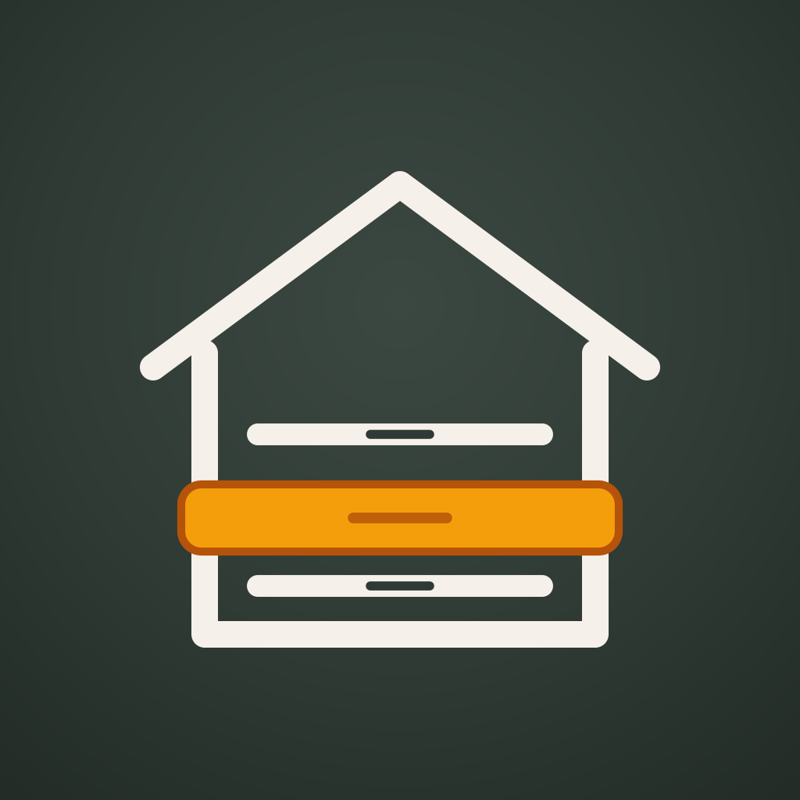
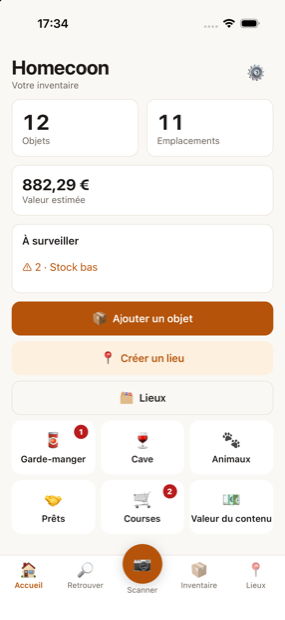
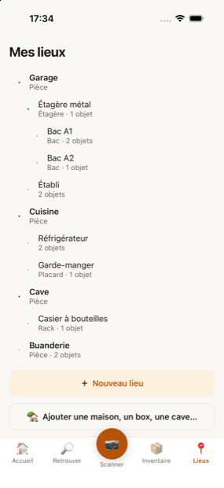
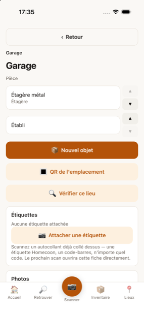
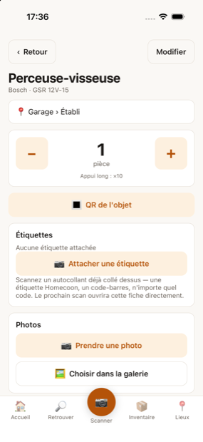
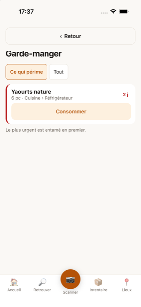

Outillage, visserie, pièces auto
Quantités, seuils d'alerte, références, numéros de série. Retirez dix vis d'un appui long.

Répertoriez ce qui dort dans le garage, la cave, les placards et les cartons. Puis retrouvez n'importe quoi avec son chemin exact, en deux gestes, sans réseau.





Le vrai obstacle d'un inventaire de maison, ce n'est pas la technique : c'est la saisie. Tout est fait pour qu'elle reste supportable.
Le garage, la cave, la cuisine… puis leurs étagères et leurs bacs, aussi loin que vous rangez. « Bac A1 » à « Bac A6 » se créent d'un seul geste.
L'application imprime une planche de vingt-quatre étiquettes. Le QR contient l'identifiant du bac, jamais son chemin : renommez-le ou déplacez-le, l'étiquette reste valable.
Scannez le QR du bac, puis enchaînez les objets sans quitter l'écran. Un objet minimal, c'est un nom : le reste est facultatif.
« chevilles », « ce qui périme », « dans le garage ». La réponse arrive avec le chemin complet — et l'application répond même en mode avion.
Vingt-trois catégories, dont quatre ont leur propre écran parce qu'elles posent des questions différentes.
Quantités, seuils d'alerte, références, numéros de série. Retirez dix vis d'un appui long.
Domaine, appellation, millésime, position dans le rack, fenêtre de dégustation. « Quels vins dois-je boire cette année ? » devient une question qui a une réponse.
Trois boîtes en mars et cinq en août, c'est le même produit avec deux dates : chaque lot a sa DLC, et on entame toujours la plus proche.
Croquettes, litière, soins, équipement — pour le chien, le chat, les poissons, le cheval… Avec la ration quotidienne : « il reste environ 12 jours de croquettes pour Rex ».
Pas de compte à créer, pas de serveur, pas d'abonnement. C'est aussi la seule façon d'obtenir une réponse dans une cave sans réseau.
Tout est enregistré sur l'appareil. L'application répond en mode avion, au fond du garage.
Toutes vos données et vos photos dans un fichier, protégé par une phrase de passe que vous seul connaissez.
Export en classeur Excel — et le même fichier se réimporte. Corrigez trois cents lignes sur un ordinateur, réimportez, rien n'est perdu.
Un achat unique, à vie. Pas d'abonnement, comme les autres applications de la gamme.
Atteindre la limite ne détruit ni ne cache jamais rien : l'ajout est bloqué, tout ce qui est déjà enregistré reste consultable et exportable.
L'application n'est pas encore publiée sur les stores. Voici ce qui fonctionne aujourd'hui, vérifié sur un téléphone.
| Étape | État |
|---|---|
| Lieux : arbre libre, création en série, déplacement d'une branche entière | fait |
| Objets, photos, quantités par journal de mouvements | fait |
| Recherche, QR d'emplacement, planche d'étiquettes, scanner hors ligne | fait |
| Sauvegarde chiffrée, classeur Excel dans les deux sens, import prévisualisé | fait |
| Neuf langues | fait |
| Codes-barres produits, garde-manger, cave à vin | en cours |
| Publication App Store et Google Play | plus tard |